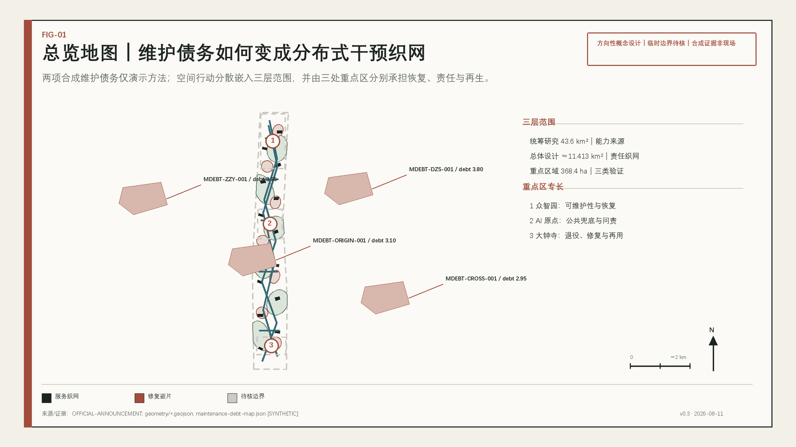
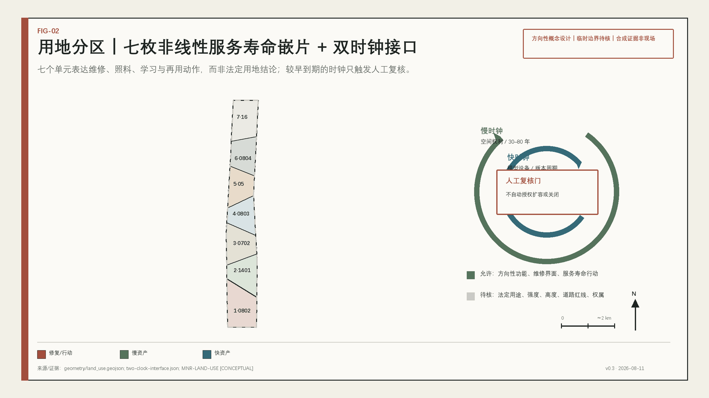
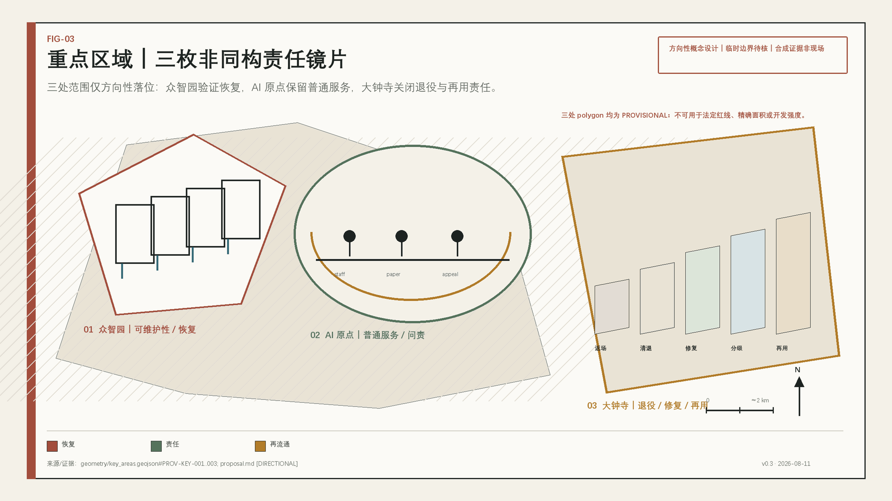
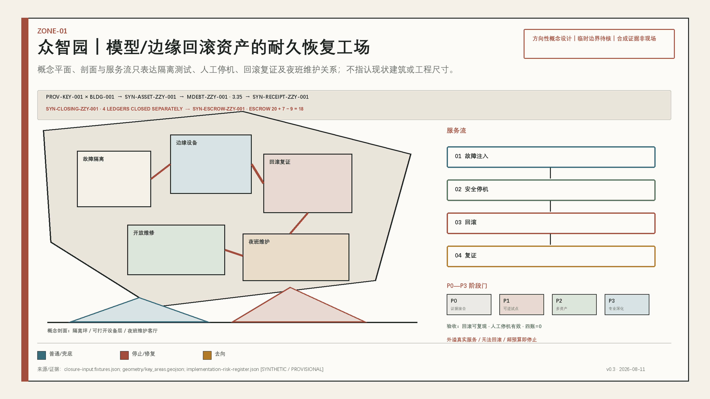
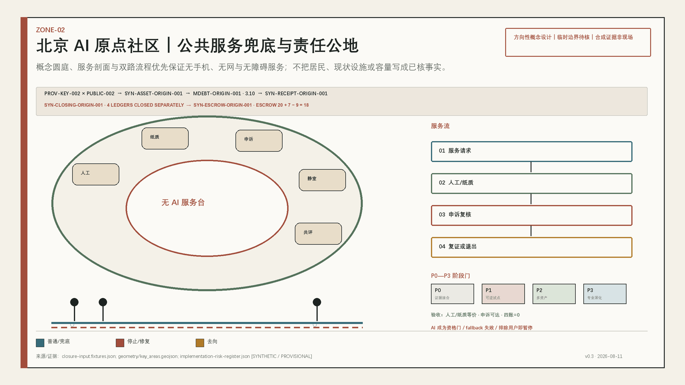
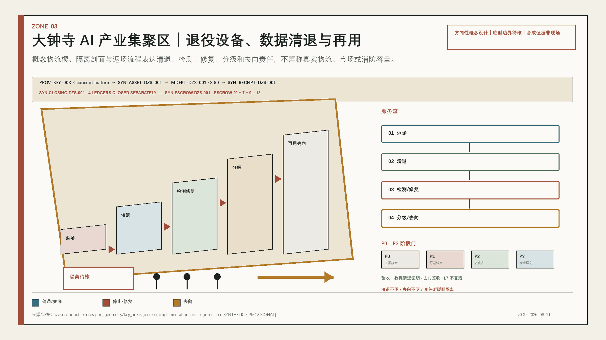
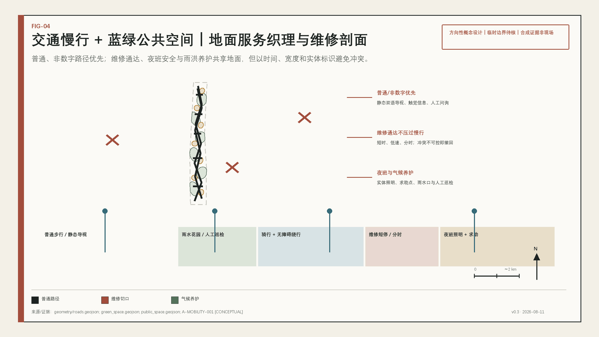
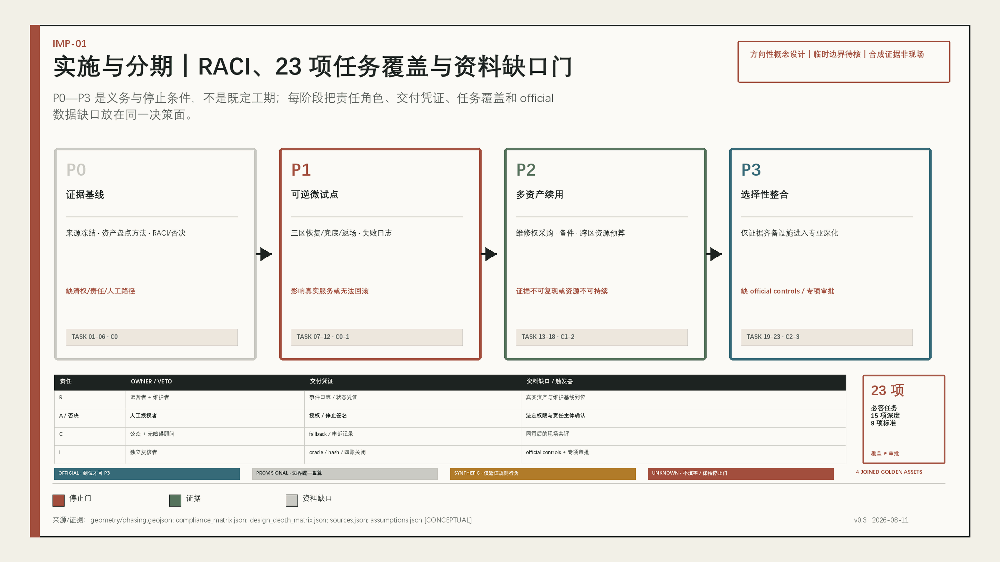
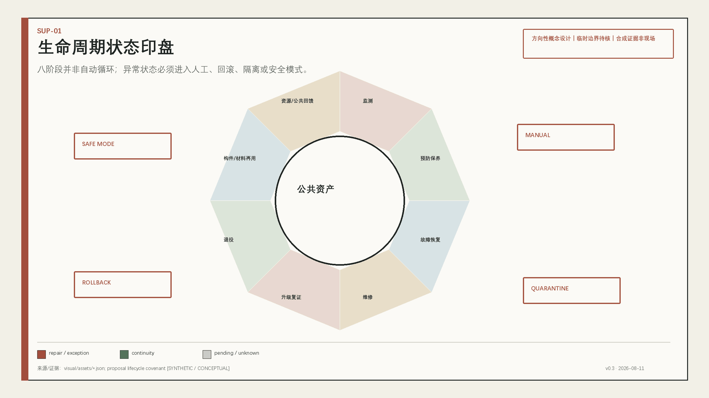
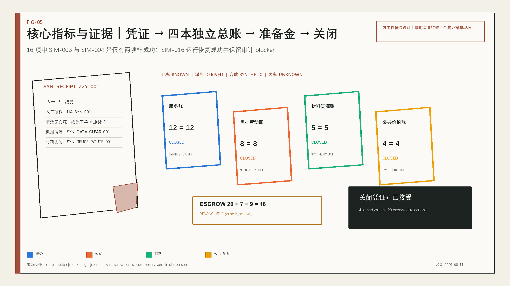

众智园
可维护性、故障注入、回滚与恢复；真实公共服务不得被试验外溢。
公共智能与空间资产续用契约
让更新发生在更换之前
把城市当作持续检查、修复、升级、交接和再用的公共器物。每一道接缝都记录原因、责任与证据。
方向性概念设计；不构成法定规划、政府审定或现场绩效。
合成维护债务演示不冒充真实积压；它只说明如何把巡检、修复、无障碍和退出缺口转化为分布式干预织网。

统筹研究范围、总体设计范围、重点区域范围回答不同问题。七个用地单元表达服务寿命行动，不作法定用地声称。

| 范围 | 任务 | 边界 |
|---|---|---|
| 43.6 km² | 能力来源与案例转译 | 文本任务依据 |
| ≈11.413 km² | 责任、空间与公众相遇 | PROVISIONAL |
| 368.4 ha | 三类责任验证 | PROVISIONAL |
可维护性、故障注入、回滚与恢复；真实公共服务不得被试验外溢。
人工窗口、纸质凭证、普通服务和申诉复核。
数据清退、返场、检测、修复、分级、再用或负责处置。




普通/非数字路径先成立，维修通达、夜班照明、气候养护和可维修建筑界面随后叠入。


12 个 AI 场景均需最小数据、人工复核、非数字兜底和退出条件。

| ID | 动作 | 人工/离线边界 |
|---|---|---|
| SC-03 | 双路值守服务 | 人工、纸质、静态导视 |
| SC-04 | 城市恢复演练 | 安全员可中止 |
| SC-09 | 可信数据清退 | 无证明不得再流通 |
| SC-12 | 公共回馈与申诉 | 线下申诉、独立复核 |
12 = 12
CLOSED
8 = 8
CLOSED
5 = 5
CLOSED
4 = 4
CLOSED
仿真仅有两项非成功：SIM-003 schema_rejected、SIM-004 energy_budget_exceeded；SIM-016 是运行恢复成功且保留 audit blocker，不是审计任务失败。

23 项必答任务、15 项设计深度和 9 项标准记录均映射到正文、图层、指标、图纸和自检。
视觉与 PDF 内容级构建已完成；package_state 仍为 scaffold，未持久化四门、未 finalize、未进入正式评审。
OFFICIAL-ANNOUNCEMENT · AGENT-TASKBOOK · SOURCE-REGISTRY · geometry/*.geojson · metrics.json · simulation.json · visual/assets/*.json
官方红线、控规、权属、现状建筑、交通、市政、文保、真实资产与维护基线均未取得；所有临时、合成和未知状态保持可见。
| 类别 | 允许表达 | 禁止表达 |
|---|---|---|
| KNOWN / DERIVED | 包内复算 | 法定或现场事实 |
| SYNTHETIC | 规则行为 | 现场有效 |
| UNKNOWN | 保持空缺和触发器 | 填零 |